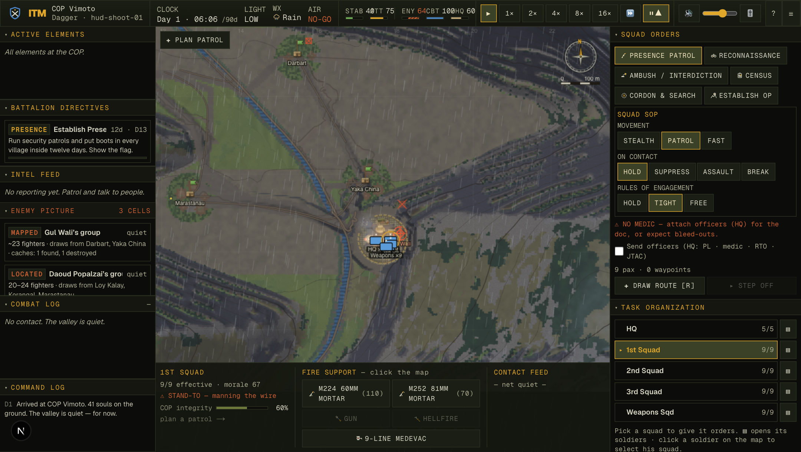
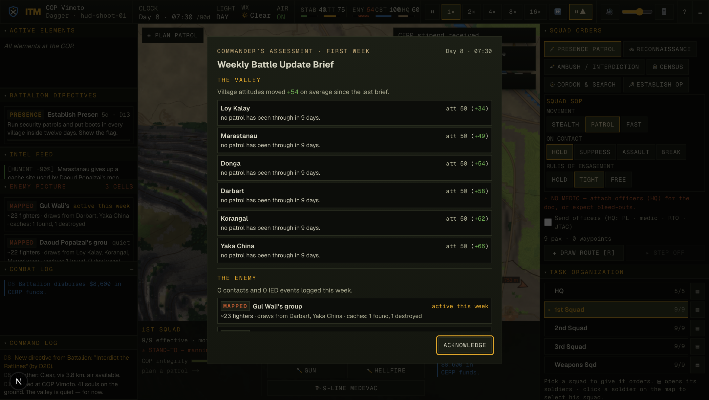
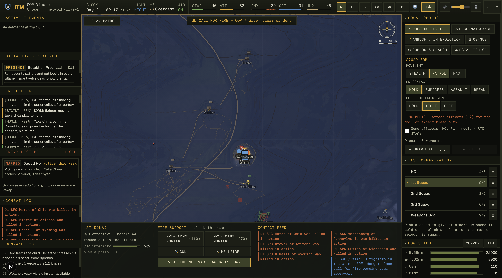
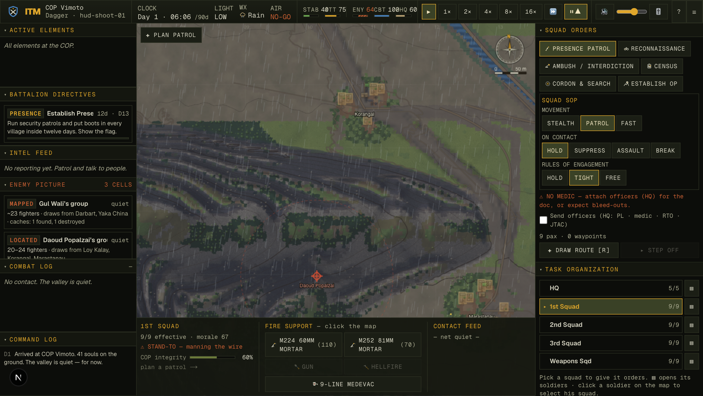

01You can't hunt a weather system
Before this wave the entire persistent state of the insurgency was two scalars:
enemyStrengthAbs (rolled 40–70 at world creation) and enemyHeat. The director
spent the pool on spawned activities; a fighter who escaped your patrols simply vanished
(cullEnemies discarded him at zero cost). The game already had a sourced, reliability-scored
intel feed — ICOM intercepts that genuinely telegraph incoming mortars, informant events, drone cues —
but intel about a weather system cannot accumulate into anything. There was nothing to learn, no one to
blame, no network to dismantle. Between firefights, the deepest simulation in the valley had nothing for
a commander to think about.
02Relief-of-command reads an evidence file now
Issue 035 measured that half to two-thirds of careful 8-day tours were ended by relief-of-command — triggered by opening-days casualties the player's policy could not yet have influenced. A coin-flip wearing a colonel's uniform. The fix is one mechanism: every point of Higher's lost confidence is now attributed (casualties / civilian casualties / failed directives) into a persisted ledger — and battalion relieves only over a pattern it can name, past a five-day grace, never for a single catastrophic day; a visible turnaround extends the review instead of ending the tour (FM 6-22). When relief does come, the end screen reads the file to you, by name and by number.
The mechanic finally discriminates policy: the careful commander survives his bad first week; the body-count commander is handed his file.
03The network: cells, caches, and a memory of your habits
- 3–5 persistent cells form at world creation on the most sympathetic villages — each with a named leader, home ground in the high draws, its own strength, and a personality: aggression, IED skill, and a grudge that grows when you kill its men.
- The director spends cells, not a scalar. Activities stage from the acting cell's home ground, field no more men than it has, and bend toward its personality. The old scalar lives on as the derived sum — every legacy reader untouched.
- IEDs come from somewhere. An IED ambush requires a living munitions cache in range and drains it. Kill the caches and that cell reverts to small arms.
- They learn your habits. A decaying 32×32 patrol-heat grid remembers where your patrols walk; IED siting prefers your habitual ground. Predictable routes are physically dangerous now.
- Killing the leader matters. A named leader embodied with an activity can die in it — the cell renames under a successor, loses a third of its strength as fighters drift, and remembers.
- Cells break. Under two fighters, survivors merge into the nearest living cell; break them all and the valley goes quiet.
- The population gives the network up. A won-over, cooperative village starts naming its cell — leader, ground, caches — with reliability scaling on cooperation. FM 3-24's loop (win the people → they expose the network → dismantle it → the valley calms) is now a mechanic, not a sentence in the manual.
04The bug we shipped in the morning and caught by noon
Transparency is a feature, so here is the wave's worst moment. The build contract said an exfiltrated fighter should "flow back into his cell." But fielding never deducted from a cell (fighters stay on the roster while deployed) — so the +1 deposit double-counted every survivor. An infiltration that walked out and walked home minted fighters from nothing.
Measured: on a pinned-hot seed the network printed strength from 64 to the 80-cap inside one game-day and stayed pinned. The acceptance probe didn't catch it — because the probe asserted the contract's wording, and the contract was wrong. Overfit-to-contract is just overfit with better paperwork.The fix is stricter than the feature: a safe exfil is net-zero (he never left the books) and only a KIA moves the roster, exactly −1. The probe's assert now proves conservation in both directions, and the contract carries a dated correction block instead of a silent edit.
Post-fix, a valley forced to maximum tempo burns its own roster down through real casualties and recruits back slowly. Attrition finally buys something — and costs them something.
05Seeing the war: the Enemy Picture and the weekly assessment
The map never shows enemy ground truth. Each cell carries an intel ladder — unknown → named → located → mapped — and the Enemy Picture panel, the map markers and the weekly assessment all read one shared gate, so what you see is exactly what the fiction has earned. A located cell renders with a deliberate ~120 m uncertainty ring; only a mapped one sits at its true home. Found caches appear; destroyed ones stay on the map as struck trophies.
Once a game-week, the clock pauses for the commander's assessment — an S-3 update at a plywood table: each village's attitude move with its causes (the clinic that opened, the promise you broke, the funeral), the enemy picture, Higher's confidence trend with the live relief ledger, and the week's casualties by name.


06One live night, seed network-live-1


07Verification
| check | result |
|---|---|
tsc · build · lint | clean — wave files add zero to the pre-existing lint baseline |
smoke.ts | SMOKE OK — serialize round-trip incl. network/heat/assessment state; material hash unchanged |
enemy-network-probe.ts (new standing gate) | 9/9 — determinism byte-identical; conservation drift 0.00e+0; cache economics; succession; intel truthiness; v10 migration |
balance.ts | 12/12 contacts · KIA 1.08 / WIA 8.33 (diagnostic, within σ≈2.5 floor) · civcas 0 · no stalls |
campaign-loop.ts 3×8 (relief tree) | ALL 8 PASS — careful 85.7 vs body-count 4.0; 0/3 careful relieved |
campaign-loop.ts 3×8 (combined tree) | COIN GATE OK — all 8 PASS. Mean spread 25.7; best-pair spread 93 (careful 100 vs 7, the highest measured). 2/3 careful tours relieved by legitimately-attributed multi-day patterns: the adaptive enemy punishes the harness's fixed-route scripted policy — filed as issue 037, with the follow-ups named |
| relief scenario probes (direct-drive) | grace / pattern / trend-credit / close — all four branches proven |
| live browser session | network, gating, HUMINT escalation, FPF approval, conservation-in-contact all verified in the running game |
08Residuals, named
- Passive strength drift in a quiet valley — 60→50 over eight no-contact game-hours (the regen integrator nets slightly negative at baseline sympathy). Inherited dynamic, plausibly "pacification pressure," but uncharacterized. Measure before anyone tunes it.
- Patrol-heat → IED risk is built and proven to bias siting, but not yet quantified as a measured incidence delta between predictable and varied patrolling. Named candidate probe.
- The weekly assessment is proven by determinism probe and screenshots, not by an organic day-8 live sitting (that is eight game-days of wall-clock).
- balance.ts printed one "element lingering" warning (task-resume timing at run end; the stall gate itself passed). Not chased this session.
- Long leader names truncate in the panel header at default width. Cosmetic; resizable.
The valley has always been honest about physics. Now it is honest about people: the man on the other ridge has a name, a home, a temper, and a memory — and the only way to learn any of it is to be worth telling.